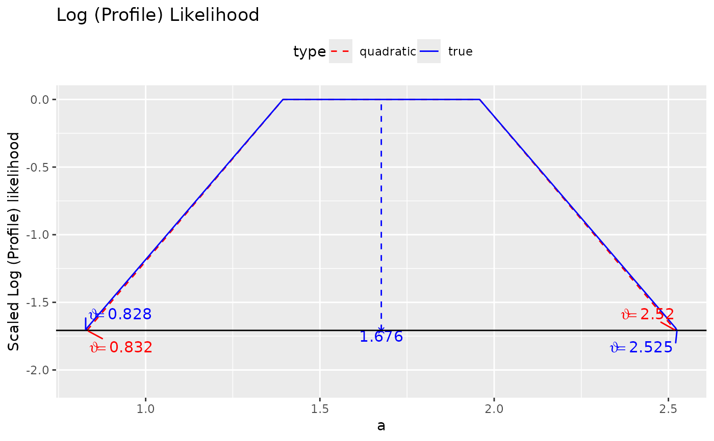

These functions compute the log profile likelihood of a parameter when it is fixed to a value or a range of values
Usage
loglike_compare(
sem_out,
semlbci_out = NULL,
par_i,
confidence = 0.95,
n_points = 21,
start = "default",
try_k_more = 5,
parallel = FALSE,
ncpus = parallel::detectCores(logical = FALSE) - 1,
use_pbapply = TRUE
)
loglike_range(
sem_out,
par_i,
confidence = 0.95,
n_points = 21,
interval = NULL,
verbose = FALSE,
start = "default",
try_k_more = 5,
parallel = FALSE,
ncpus = parallel::detectCores(logical = FALSE) - 1,
use_pbapply = TRUE
)
loglike_point(
theta0,
sem_out,
par_i,
verbose = FALSE,
start = "default",
try_k_more = 5
)
loglike_quad_range(
sem_out,
par_i,
confidence = 0.95,
n_points = 21,
interval = NULL,
parallel = FALSE,
ncpus = parallel::detectCores(logical = FALSE) - 1,
use_pbapply = TRUE,
try_k_more = 5,
start = "default"
)
loglike_quad_point(theta0, sem_out, par_i)
loglike_compare_ur(
sem_out,
semlbci_out = NULL,
par_i,
confidence = 0.95,
n_points = 21,
standardized = FALSE,
parallel = FALSE,
ncpus = parallel::detectCores(logical = FALSE) - 1,
use_pbapply = TRUE,
loadbalancing = TRUE
)
loglike_range_ur(
sem_out,
par_i,
standardized = FALSE,
confidence = 0.95,
n_points = 21,
interval = NULL,
verbose = FALSE,
parallel = FALSE,
ncpus = parallel::detectCores(logical = FALSE) - 1,
use_pbapply = TRUE,
loadbalancing = TRUE
)
loglike_point_ur(theta0, sem_out, par_i, standardized = FALSE, verbose = FALSE)
loglike_quad_range_ur(
sem_out,
par_i,
confidence = 0.95,
standardized = FALSE,
n_points = 21,
interval = NULL,
parallel = FALSE,
ncpus = parallel::detectCores(logical = FALSE) - 1,
use_pbapply = TRUE,
loadbalancing = TRUE
)
loglike_quad_point_ur(theta0, sem_out, par_i, standardized = FALSE)Arguments
- sem_out
The SEM output. Currently the outputs of
lavaan::lavaan()or its wrappers, such aslavaan::sem()andlavaan::cfa()are supported.- semlbci_out
The output of
semlbci(). If supplied, it will extract the likelihood-based confidence interval from the output. If not, it will callsemlbci().- par_i
The row number of the parameter in the output of
lavaan::parameterTable(). Can also be a lavaan::model.syntax specification for a parameter, e.g.,"y ~ x"orab :=. It will be converted to the row number bysyntax_to_i(). Refer tosyntax_to_i()for details.- confidence
The level of confidence of the Wald-type confidence interval. If
intervalisNULL, this confidence is used to form the interval.- n_points
The number of points to be evaluated in the interval. Default is 21.
- start
How the start values are set in
lavaan::lavaan(). Seelavaan::lavOptions()on this argument. Default is"default". If the plot is too irregular, try setting it to"simple".- try_k_more
How many more times to try finding the p-values, by randomizing the starting values. Default is 5. Try increasing this number if the plot is too irregular.
- parallel
If
TRUE, parallel processing will be used. A cluster will be created byparallel::makeCluster(), with the number of workers equal toncpus. Parallel processing, though not enabled by default, is recommended because it can speed up the computation a lot.- ncpus
The number of workers if
parallelisTRUE. Default isparallel::detectCores(logical = FALSE) - 1, the number of physical cores minus 1.- use_pbapply
If
TRUEand pbapply::pbapply is installed, pbapply::pbapply will be used to display the progress in computing the log profile likelihood. Default isTRUE.- interval
A vector of numbers. If provided and has two elements, this will be used as the end points of the interval. If it has more than two elements, the elements will be used directly to form the values in the interval. Default is
NULL.- verbose
Whether some diagnostic information will be printed. Default is
FALSE.- theta0
The value at which the parameter is fixed to.
- standardized
Logical. Whether the parameter requested is in the standardized solution. Default is
FALSE.- loadbalancing
Logical. When using parallel processing, whether load balancing is used. Default is
TRUE.
Value
loglike_compare() calls loglike_range() and
loglike_quad_range() and returns their results in a
loglike_compare-class object, a list
with these elements:
quadratic: The output ofloglike_quad_range().loglikelihood: The output ofloglike_range().pvalue_quadratic: The likelihood ratio test p-values at the quadratic approximation confidence bounds.pvalue_loglikelihood: The likelihood ratio test p-values at the likelihood-based confidence bounds.est: The point estimate of the parameter insem_out.
loglike_compare-class object has a plot method (plot.loglike_compare())
that can be used to plot the log profile likelihood.
loglike_point() returns a list with these elements:
loglike: The log profile likelihood of the parameter when it is fixed totheta0.pvalue: The p-values based on the likelihood ratio difference test between the original model and the model with the parameter fixed totheta0.fit: A lavaan::lavaan object. The original model with the parameter fixed totheta0.lrt: The output oflavaan::lavTestLRT(), comparing the original model to the model with the parameter fixed totheta0.
loglike_quad_range() returns a data frame with these
columns:
theta: The values to which the parameter is fixed to.loglike: The log profile likelihood values of the parameter using quadratic approximation.pvalue: The p-values based on the likelihood ratio difference test between the original model and the model with the parameter fixed totheta.
loglike_quad_point() returns a single number of the class
lavaan.vector (because it is the output of
lavaan::fitMeasures()). This number is the quadratic
approximation of the log profile likelihood when the parameter is
fixed to theta0.
loglike_range() returns a data frame with these columns:
theta: The values to which the parameter is fixed to.loglike: The log profile likelihood attheta.pvalue: The p-values based on the likelihood ratio difference test between the original model and model with the parameter fixed totheta.
Details
It uses the methods presented in Pawitan (2013) to
compute and visualize the log profile likelihood of a parameter in
a structural equation model when this parameter is fixed to a value or
a range
of values. loglike_range() and loglike_point() compute the
so-called "true" log profile likelihood, while
loglike_quad_range() and loglike_quad_point() approximate the log
profile likelihood by a quadratic function.
These functions are for creating illustrative examples and learning
only, not for research use. Therefore, they are not as versatile as
semlbci() in the types of models and parameters supported. They
can be used for free parameters and user-defined parameters not
involved in any constraints. Only a model fitted by maximum
likelihood is supported.
They will not check whether the computation is appropriate for a model. It is the responsibility of the users to ensure that the computation is appropriate for the model and parameter.
In version 0.11.2.1, added variants
of the function, with suffix _ur,
which use root finding ("ur" in
semlbci()). These variants are
slower to run but can be used for
parameter in the standardized
solution. Therefore, they can used to
generate plots for parameters such as
standardized regression paths and
correlations.
Functions
loglike_compare(): Generates points for log profile likelihood and quadratic approximation, by calling the helper functionsloglike_range()andloglike_quad_range().loglike_range(): Find the log profile likelihood for a range of values.loglike_point(): Find the log likelihood at a value.loglike_quad_range(): Find the approximated log likelihood for a range of values.loglike_quad_point(): Find the approximated log likelihood at a value.loglike_compare_ur(): Generates points for log profile likelihood and quadratic approximation using root finding, by calling the helper functionsloglike_range_ur()andloglike_quad_range_ur().loglike_range_ur(): Find the log profile likelihood for a range of values using root finding.loglike_point_ur(): Find the log likelihood at a value.loglike_quad_range_ur(): Find the approximated log likelihood for a range of values using root finding.loglike_quad_point_ur(): Find the approximated log likelihood at a value. Support a parameter in the standardized solution.
References
Pawitan, Y. (2013). In all likelihood: Statistical modelling and inference using likelihood. Oxford University Press.
Examples
## loglike_compare
library(lavaan)
data(simple_med)
dat <- simple_med
mod <-
"
m ~ a * x
y ~ b * m
ab := a * b
"
fit <- lavaan::sem(mod, simple_med, fixed.x = FALSE)
# 4 points are used just for illustration
# At least 21 points should be used for a smooth plot
# Remove try_k_more in real applications. It is set
# to zero such that this example does not take too long to run.
# use_pbapply can be removed or set to TRUE to show the progress.
ll_a <- loglike_compare(fit, par_i = "m ~ x", n_points = 4,
try_k_more = 0,
use_pbapply = FALSE)
plot(ll_a)

# See the vignette "loglike" for an example for the
# indirect effect.
## loglike_range
# Usually not to be used directly.
# Used by loglike_compare().
# 3 points are used just for illustration
ll_1 <- loglike_range(fit, par_i = "y ~ m", n_points = 2)
#>
#> Finding p-values for LR test
head(ll_1)
#> theta loglike pvalue
#> 1 0.3914228 -1570.448 0.05109878
#> 2 0.6787425 -1570.448 0.05109878
## loglike_point
# Usually not to be used directly.
# Used by loglike_compare().
llp_1 <- loglike_point(theta0 = 0.3, sem_out = fit, par_i = "y ~ m")
llp_1$loglike
#> 'log Lik.' -1573.561 (df=4)
llp_1$pvalue
#> [1] 0.001539546
llp_1$lrt
#>
#> Chi-Squared Difference Test
#>
#> Df AIC BIC Chisq Chisq diff RMSEA Df diff Pr(>Chisq)
#> sem_out 1 3147.1 3163.6 10.549
#> fit_i 2 3155.1 3168.3 20.579 10.031 0.21249 1 0.00154 **
#> ---
#> Signif. codes: 0 ‘***’ 0.001 ‘**’ 0.01 ‘*’ 0.05 ‘.’ 0.1 ‘ ’ 1
## loglike_quad_range
# Usually not to be used directly.
# Used by loglike_compare().
# 2 points are used just for illustration
lq_1 <- loglike_quad_range(fit, par_i = "y ~ m", n_points = 2)
#>
#> Finding p-values for quadratic approximation
head(lq_1)
#> theta loglike pvalue
#> 1 0.3914228 -1570.466 0.05109878
#> 2 0.6787425 -1570.466 0.05109878
## loglike_quad_point
# Usually not to be used directly.
# Used by loglike_compare().
lqp_1 <- loglike_quad_point(theta0 = 0.3, sem_out = fit, par_i = "y ~ m")
lqp_1
#> logl
#> -1573.688